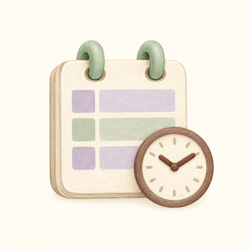
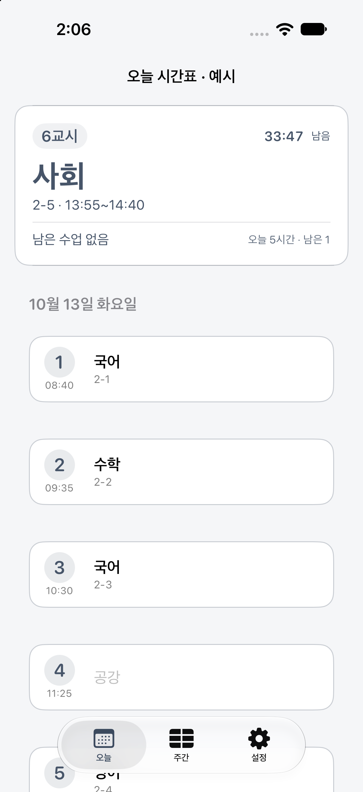
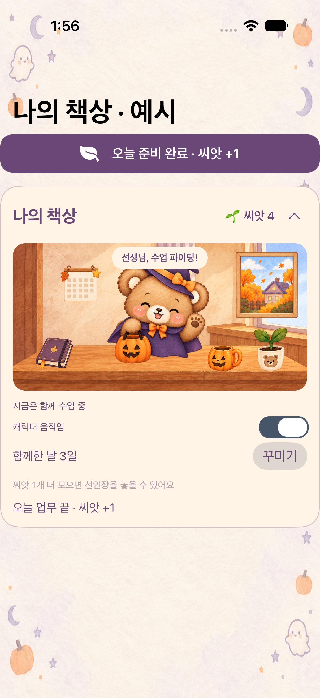
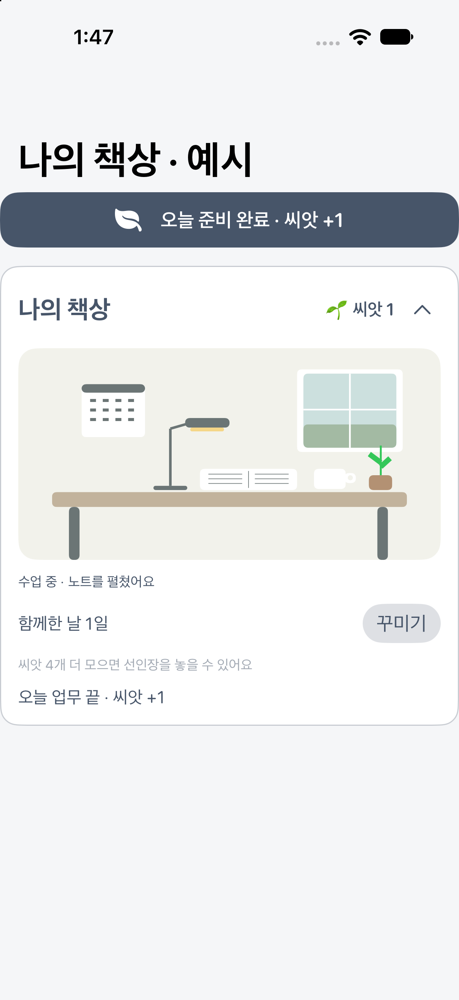
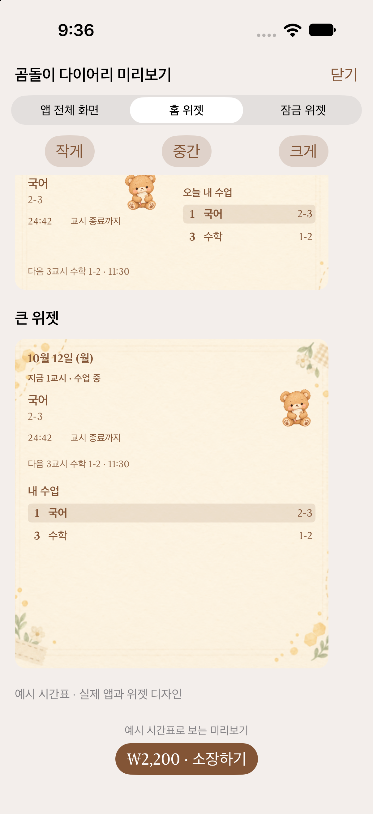

지금 수업, 다음 수업
오늘·주간 시간표와 담임반 시간표를 확인하세요. 수업 시간, 쉬는 시간과 남은 시간을 한눈에 볼 수 있어요.

선생님을 위한 작은 일상 도구
교사의 하루: 시간표
다음 수업과 남은 시간을 확인하고,
나만의 작은 책상으로 하루를 채워 보세요.
iPhone 앱 출시 · Android 정식 출시 준비 중
광고 없이 기본 기능 무료 · 테마만 선택 구매


수업 준비부터 하루 마무리까지
오늘·주간 시간표와 담임반 시간표를 확인하세요. 수업 시간, 쉬는 시간과 남은 시간을 한눈에 볼 수 있어요.
홈 화면 위젯과 수업 전 알림으로 일정을 챙기세요. iPhone에서는 잠금 화면 위젯도 지원해요. Android는 홈 화면 위젯을 제공해요.
하루를 준비하고 마무리하며 씨앗을 모으고, 식물·컵·문구와 창밖 풍경을 꾸며 보세요. 테마마다 다른 분위기를 만날 수 있어요.
실제 앱 화면으로 만나 보세요
화면은 iPhone 앱의 예시 시간표입니다. 기기와 앱 버전, 선택한 테마에 따라 표시가 달라질 수 있어요.


간편하게 시작하기
학교 연동 없이 나의 수업을 직접 등록해요. 수업 시각과 휴교·단축수업도 설정할 수 있어요.
공개 데이터가 제공되는 학교의 시간표를 조회해요. 컴시간의 공식 앱이나 제휴 서비스가 아니며, 제공처 상황에 따라 조회가 제한될 수 있어요.
본인 명의의 개인 인증키로 학교·학급 시간표를 조회하고, 담당 학급과 과목을 지정해요. 인증키는 나이스에서 발급받을 수 있어요.
외부 시간표는 변경 사항 반영이 늦거나 조회가 중단될 수 있습니다. 중요한 수업 변경은 학교 공지를 확인해 주세요.
시간표 등록·학교 조회·위젯·알림과 심플 기본·할로윈 곰돌이 테마를 광고 없이 무료로 이용하세요. 다른 캐릭터 테마는 구독 없이 개별 1회 구매로 소장할 수 있어요. 가격은 앱의 스토어 결제 화면에서 확인해 주세요.
내 기록은 내 기기에
회원가입 없이 사용하며, 시간표와 책상 기록을 개발자 서버로 수집하지 않습니다. 외부 시간표 조회와 스토어 결제에는 각 제공자의 정보 처리가 수반됩니다.
iPhone과 Android 구매 권한은 서로 이전되지 않습니다. 책상 기록은 별도 서버 동기화를 지원하지 않으며 테마 구매 복원과 구분됩니다.
Android 다운로드 링크는 정식 출시 후 이 페이지에 안내합니다.